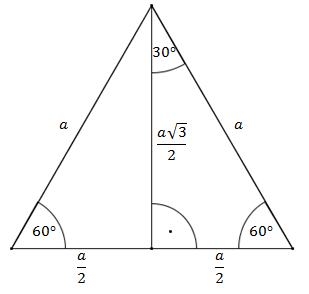
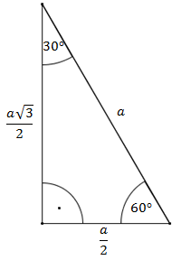
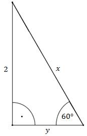
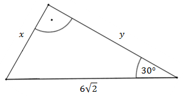

Kąty \(30^\circ \text{ i }60^\circ \) mamy w
trójkącie prostokątnym, który jest połówką trójkąta równobocznego.  Wysokość trójkąta równobocznego o
boku \(a\) wyraża się wzorem \(h=\frac{a\sqrt{3}}{2}\).
Przedstawmy na oddzielnym rysunku sam
trójkąt prostokątny:  Korzystając z definicji funkcji trygonometrycznych obliczamy: \[\begin{split}&\sin
60^\circ =\frac{\frac{a\sqrt{3}}{2}}{a}=\frac{a\sqrt{3}}{2}\cdot
\frac{1}{a}=\frac{\sqrt{3}}{2}\\[10pt]&\cos 60^\circ =\frac{\frac{a}{2}}{a}=\frac{a}{2}\cdot
\frac{1}{a}=\frac{1}{2}\\[10pt]&\operatorname{tg} 60^\circ
=\frac{\frac{a\sqrt{3}}{2}}{\frac{a}{2}}=\frac{a\sqrt{3}}{2}\cdot
\frac{2}{a}=\sqrt{3}\\[10pt]&\operatorname{ctg} 60^\circ
=\frac{\frac{a}{2}}{\frac{a\sqrt{3}}{2}}=\frac{a}{2}\cdot
\frac{2}{a\sqrt{3}}=\frac{1}{\sqrt{3}}=\frac{\sqrt{3}}{3}\end{split}\] oraz: \[\begin{split}&\sin
30^\circ =\frac{\frac{a}{2}}{a}=\frac{a}{2}\cdot \frac{1}{a}=\frac{1}{2}\\[10pt]&\cos 30^\circ
=\frac{\frac{a\sqrt{3}}{2}}{a}=\frac{a\sqrt{3}}{2}\cdot
\frac{1}{a}=\frac{\sqrt{3}}{2}\\[10pt]&\operatorname{tg} 30^\circ
=\frac{\frac{a}{2}}{\frac{a\sqrt{3}}{2}}=\frac{a}{2}\cdot
\frac{2}{a\sqrt{3}}=\frac{1}{\sqrt{3}}=\frac{\sqrt{3}}{3}\\[10pt]&\operatorname{ctg} 30^\circ
=\frac{\frac{a\sqrt{3}}{2}}{\frac{a}{2}}=\frac{a\sqrt{3}}{2}\cdot \frac{2}{a}=\sqrt{3}\end{split}\]
Zatem mamy:
| \(\alpha \) |
\(30^\circ \) |
\(60^\circ \) |
| \(\sin \alpha \) |
\[\frac{1}{2}\] |
\[\frac{\sqrt{3}}{2}\] |
| \(\cos \alpha \) |
\[\frac{\sqrt{3}}{2}\] |
\[\frac{1}{2}\] |
| \(\operatorname{tg} \alpha \) |
\[\frac{\sqrt{3}}{3}\] |
\[\sqrt{3}\] |
| \(\operatorname{ctg} \alpha \) |
\[\sqrt{3}\] |
\[\frac{\sqrt{3}}{3}\] |
Oblicz długość odcinków \(x\text{ i }y\). 
Z definicji sinusa dla zaznaczonego kąta \(60^\circ \) wiemy, że: \[\sin 60^\circ
=\frac{2}{x}\] Ponadto wiemy, że \(\sin 60^\circ = \frac{\sqrt{3}}{2}\), zatem:
\[\begin{split}\frac{\sqrt{3}}{2}&=\frac{2}{x}\\[10pt]x\sqrt{3}&=4\\[10pt]x&=\frac{4}{\sqrt{3}}\\[10pt]x&=\frac{4\sqrt{3}}{3}\end{split}\]
Do wyliczenia \(y\) skorzystamy z definicji tangensa dla zaznaczonego kąta \(60^\circ \).
\[\operatorname{tg} 60^\circ =\frac{2}{y}\] Ponadto wiemy, że \(\operatorname{tg} 60^\circ
=\sqrt{3}\). Zatem:
\[\begin{split}\sqrt{3}&=\frac{2}{y}\\[10pt]\sqrt{3}y&=2\\[10pt]y&=\frac{2}{\sqrt{3}}\\[10pt]y&=\frac{2\sqrt{3}}{3}\end{split}\]
Oblicz długość odcinków \(x\) i \(y\). 
Z definicji sinusa dla zaznaczonego kąta \(30^\circ \) wiemy, że: \[\sin 30^\circ
=\frac{x}{6\sqrt{2}}\] Ponadto wiemy, że \(\sin 30^\circ = \frac{1}{2}\), zatem:
\[\begin{split}\frac{1}{2}&=\frac{x}{6\sqrt{2}}\\[10pt]2x&=6\sqrt{2}\\[10pt]x&=3\sqrt{2}\end{split}\]
Do wyliczenia \(y\) skorzystamy z definicji cosinusa dla zaznaczonego kąta \(30^\circ \). \[\cos
30^\circ =\frac{y}{6\sqrt{2}}\] Ponadto wiemy, że \(\cos 30^\circ =\frac{\sqrt{3}}{2}\). Zatem:
\[\begin{split}\frac{\sqrt{3}}{2}&=\frac{y}{6\sqrt{2}}\\[10pt]2y&=\sqrt{3}\cdot
6\sqrt{2}\\[10pt]2y&=6\sqrt{6}\\[10pt]y&=3\sqrt{6}\end{split}\]